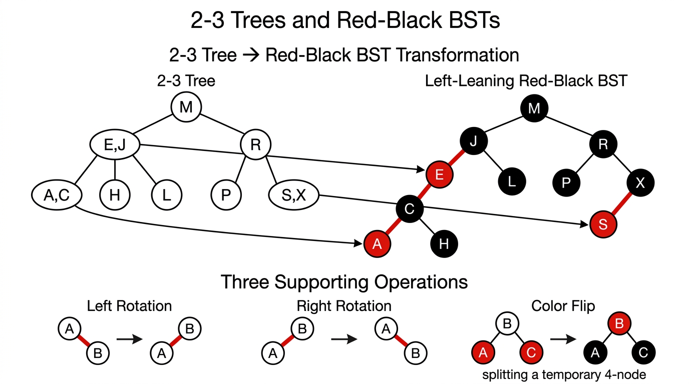
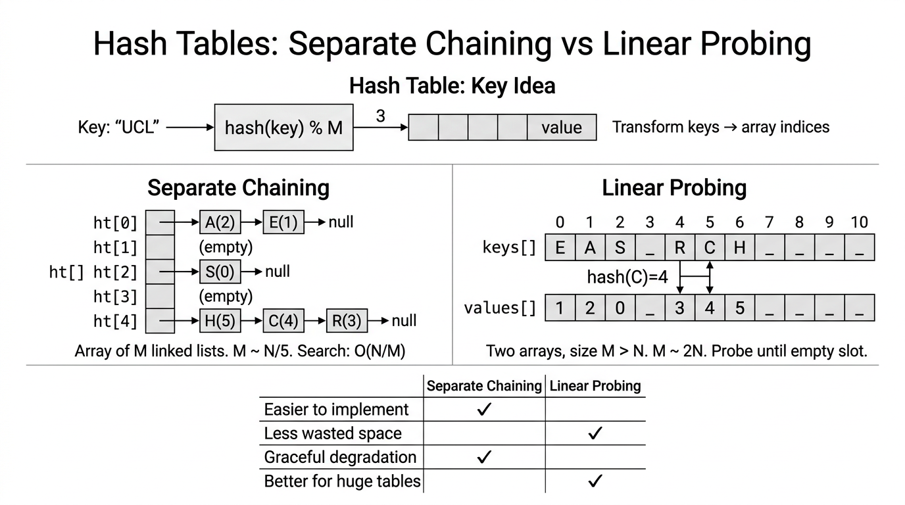

Balanced Search Trees & Hash Tables — COMP0005 Algorithms¶
Lecture-style notes. 2-3 trees and left-leaning red–black BSTs (LLRB) guarantee logarithmic height so symbol-table operations stay predictable. Hash tables trade ordering for expected constant-time access when \(M\) is chosen well and the hash function spreads keys evenly.
1. COMPLETE TOPIC SUMMARIES¶
2-3 search trees¶
Structure. Each internal node is either:
- a 2-node: one key and two children (subtrees for keys less than, between, or greater than that key — standard BST partitioning extended naturally), or
- a 3-node: two ordered keys and three children (partitioning into three key ranges).
Invariants (both must hold):
- Symmetric order: an in-order traversal visits keys in strictly ascending order (same “BST ordering” idea, generalized to 3-nodes).
- Perfect balance: every root-to-null path has the same length — all leaves are at the same depth (external tree height is uniform).
Search. Compare the query key with the key(s) in the current node and recurse into the one subtree that can contain it — same “decision at a node, then go deeper” pattern as a BST, with one extra branch case for 3-nodes.
Insert — Case 1 (into a 2-node at the bottom). The new key fits into an existing 2-node: promote it to a 3-node by storing two keys in that node (still local, no structural change above).
Insert — Case 2 (into a 3-node at the bottom). The naive step would create a 4-node (three keys, four children). That is not allowed in the final tree, so we split:
- Temporarily treat the node as a 4-node (three keys).
- Move the middle key up into the parent, and replace the overloaded node by two 2-nodes holding the remaining keys as children.
- If the parent also becomes overloaded (a 4-node), repeat the split upward.
- If the root becomes a 4-node, split it: the tree grows in height by one (new root holds the promoted middle key).
Locality. Splitting a 4-node uses only constant work at that level (pointer rewiring and key moves) — it is a local transformation; propagation upward is \(O(h)\) where \(h\) is height.
Height bounds (for \(N\) keys):
- Worst case (all 2-nodes): height \(\le \lfloor \log_2 N \rfloor\) — behaves like a perfectly balanced binary tree, so \(h = O(\log N)\).
- Best case (as many 3-nodes as possible): fewer nodes per level → height \(\le \lfloor \log_3 N \rfloor\) (still \(\Theta(\log N)\)).
Performance guarantee. Search, insert, and delete (with analogous splits/merges as taught) are \(O(\log N)\) — more precisely \(c \log N\) for a small constant \(c\), with no pathological \(N\)-deep skewed shape as in an unbalanced BST.
Red–black BST (left-leaning) — encoding a 2-3 tree as a BST¶
Key idea. A 2-3 tree is conceptually clean but awkward to implement directly. A left-leaning red–black BST (LLRB) represents the same 2-3 structure using only binary nodes plus edge colors.
Correspondence. A 3-node in the 2-3 tree becomes two 2-nodes in a BST, joined by an internal red link. Convention: that red link leans left (the smaller key is the parent of the larger key via a left red child).

{kind=link}
LLRB invariants (left-leaning red–black BST):
- Black balance: every path from the root to null uses the same number of black links — think “every 2-3 node contributes one black step down the conceptual tree.”
- No double-red: no node has two red links to its children (that would encode a disallowed 4-node).
- Left-leaning reds: red edges are left edges only (no right-leaning red links in the final representation).
1–1 correspondence (up to rotation choices in some presentations): 2-3 trees \(\leftrightarrow\) LLRB BSTs — same abstract set of shapes/operations, different concrete layout.
Search. Identical to ordinary BST search — ignore colors; they exist only to preserve balance on updates.
Interactive demo (browser). Step through inserts and LLRB fix-ups in an LLRB tree visualiser (static page for this site — same behaviour as the local Python llrb_visualiser_web.py tool).
Storing color. Typically: each node stores the color of the incoming link from its parent (RED = true, BLACK = false); null links are treated as BLACK.
Supporting operations (LLRB)¶
Left rotation — makes a right-leaning red link left-leaning:
Right rotation — temporarily rotates a left red link the other way (used to fix two reds in a row on the left).
Color flip — when a node’s two children are both connected by red links, recolor to simulate splitting a 4-node in the 2-3 view: parent becomes RED, both children become BLACK (exact roles match the lecture’s “temporary 4-node” story).
Insert (LLRB) — bottom-up fix-up¶
Case 1 — bottom 2-node. Standard BST insert; attach new node with a RED link to its parent; if the red is on the right, rotate left at the parent so reds lean left.
Case 2 — bottom 3-node. After inserting RED, local transforms may create a 4-node pattern (two reds in a row or two red children). Apply rotations and color flips so the 2-3 invariants are restored; a red may propagate upward — repeat fix-up on the way up (in recursive implementations, this happens after recursive calls return).
Three fix-up rules (applied in order, e.g. after recursive put):
- Right red, left black:
rotateLeft(n)— enforce left-leaning. - Left red and left-left red:
rotateRight(n)— break two consecutive left reds. - Both children red:
flipColors(n)— split the 4-node, may push red to parent.
Sketch (recursive put):
def put(n, key, value):
if n == null: return Node(key, value, RED)
# BST insert: compare key with n.key, recurse left or right, assign result
if isRed(n.right) and not isRed(n.left): n = rotateLeft(n)
if isRed(n.left) and isRed(n.left.left): n = rotateRight(n)
if isRed(n.left) and isRed(n.right): flipColors(n)
return n
(Real code also updates subtree sizes, handles updates to existing keys, and often forces the root BLACK after insertion.)
Performance (LLRB)¶
- Height: worst case \(\le 2 \log_2 N\) — at most twice the optimal BST height (red links can “double” steps between black levels).
- Worst-case search / insert / delete: \(O(\log N)\) with constant \(2 \log N\) style bound.
- Average (typical random-ish inputs): often close to \(1 \cdot \log N\) behaviour — still \(O(\log N)\).
Hash tables — array + hash function¶
Key idea. Implement a symbol table with a direct-addressing flavour: map keys to indices \(0, 1, \ldots, M-1\) in an array via a hash function \(h(\text{key})\).
Hash function goals:
- Deterministic: same key → same index.
- Fast to compute.
- Spreads keys uniformly over \(0..M-1\) to minimize collisions (in practice, as uniform as practical for the key domain).
Space–time trade-off. Larger \(M\) → fewer collisions / shorter chains / less clustering, but more memory.
Common choice — modular hashing with hash table size \(M\) often prime (reduces certain arithmetic patterns of clustering):
- Integer key: e.g.
abs(n) % M(watch language-specific overflow/sign issues in real code). - String key (Horner-style rolling hash): for characters \(s_0,\ldots,s_{k-1}\) and radix \(R\) (e.g. \(R = 31\)):
Separate chaining¶
Structure. Array of \(M\) buckets; each bucket is a linked list (or other collection) of key–value pairs. Typically \(M \ll N\) (many keys, modest bucket count).
Insert (put). Compute \(i = h(\text{key})\); insert the pair at the front of list \(i\) (often \(O(1)\) if you don’t check duplicates first).
Search (get). Compute \(i\), scan list \(i\) linearly for a matching key.
Cost model. Under simple uniform hashing (idealisation), expected chain length is \(\alpha = N/M\) (load factor). Time scales with chain length → keep \(\alpha\) bounded (e.g. \(M \approx N/5\) as a rule-of-thumb lecture figure) for expected constant time per op.
Pseudocode (illustrative):
get(key):
i = hash(key)
for each node x in bucket[i]:
if x.key == key: return x.value
return null
put(key, value):
i = hash(key)
insert (key, value) at front of bucket[i] // or update if key exists
Linear probing (open addressing)¶
Structure. One array (or parallel keys / values arrays) of size \(M\), \(M > N\). No per-bucket lists; empty slots are part of the probing sequence.
Insert. Let \(i = h(\text{key})\). If slot \(i\) is free, place it there; else try \((i+1) \bmod M\), \((i+2) \bmod M\), … until an empty slot (linear probing).
Search. Start at \(i\); if occupied by a different key, continue \(i+1, i+2, \ldots\) until empty (key absent) or match.
Clustering. Primary clustering: long runs of occupied slots build up; performance depends strongly on load \(N/M\). Lecture rule of thumb: when the table is about half full, mean displacement is around \(3/2\) (model-dependent; remember the qualitative point: keep load well below 1). Often take \(M \approx 2N\) to keep operations expected constant-time in practice.
Worst case. If the table fills or hashes cluster badly, degrades toward \(O(N)\) scans.

{kind=link}
Separate chaining vs linear probing¶
| Separate chaining | Linear probing | |
|---|---|---|
| Implementation | Often easier (lists are forgiving) | Tighter memory, but empty slots and deletion need care |
| Degradation | Graceful — long lists hurt but no rigid probe chains | Sensitive to clustering; can become bad if overloaded |
| Hash quality | Less sensitive — a few bad buckets are local | More sensitive — clustering amplifies poor spread |
| Scale / cache | Pointer chasing in lists | Better locality in one array for huge tables (when load is sane) |
Hash tables vs balanced search trees¶
| Hash table | Balanced BST / 2-3 / LLRB | |
|---|---|---|
| Typical time | Expected \(O(1)\) with good \(M\) and hash | Worst-case \(O(\log N)\) |
| Ordered ops | No efficient min, max, rank, range |
Yes — inherits BST order |
| Keys | Must design hash; equality-based | Comparable keys (compareTo) |
| Guarantees | Probabilistic / depends on \(M\) and data | Deterministic logarithmic height |
| Code complexity | Often simpler for basic get/put |
More moving parts (rotations / splits) |
Full performance summary (lecture-style bounds)¶
| Structure | Worst search | Worst insert | Avg search | Avg insert |
|---|---|---|---|---|
| Sequential search | \(N\) | \(N\) | \(N/2\) | \(N\) |
| Binary search (sorted array) | \(\lg N\) | \(N\) | \(\lg N\) | \(N/2\) |
| BST | \(N\) | \(N\) | \(c \lg N\) | \(c \lg N\) |
| 2-3 tree | \(c \lg N\) | \(c \lg N\) | \(c \lg N\) | \(c \lg N\) |
| LLRB BST | \(2 \lg N\) | \(2 \lg N\) | \(1 \lg N\) | \(1 \lg N\) |
| Hash (separate chaining) | \(\lg N\)† | \(\lg N\)† | \(3\text{–}5\)‡ | \(3\text{–}5\)‡ |
| Hash (linear probing) | \(N\) | \(N\) | \(3\text{–}5\)‡ | \(3\text{–}5\)‡ |
† Pathological worst cases (e.g. all keys in one chain, or full/clusters table) — not the usual “expected \(O(1)\)” story.
‡ Typical array accesses / probes per operation under good \(M\) and load — as in Sedgewick/Wayne-style engineering tables; asymptotics remain \(O(N/M)\) chaining or probe length linear in load under idealised models.
2. EXAM-STYLE QUESTIONS (WITH MODEL ANSWERS)¶
Q1 — 2-3 tree invariants¶
Question. State the two global invariants of a 2-3 search tree and briefly explain why each is necessary for correct search and \(O(\log N)\) height.
Model answer.
- Symmetric order: keys in any node split the key space so that an in-order traversal lists all keys in sorted order. This is exactly what makes search a single-path descent (you always know which child can hold the key).
- Perfect balance: all root-to-null paths have equal length, so the tree cannot degenerate to a chain — height is \(\Theta(\log N)\), giving logarithmic worst-case search/insert.
Q2 — 4-node split¶
Question. When inserting into a 3-node leaf in a 2-3 tree, why do we temporarily form a 4-node and then promote the middle key? What happens if the root splits?
Model answer. A legal 2-3 node holds at most two keys. Inserting into a full 3-node would hold three keys — a 4-node. We split it by sending the middle key to the parent so the remaining keys form two valid 2-nodes as children; this preserves symmetric order and balance locally. If the root becomes a 4-node and splits, the promoted middle key becomes a new root, and the tree height increases by one — the only way height grows.
Q3 — LLRB invariants and search¶
Question. List the three LLRB invariants and explain whether search uses red/black information.
Model answer. (1) Black balance: equal black links on every root-to-null path. (2) No double-red: a node cannot have two red children. (3) Left-leaning: red links are left links. Search does not use colors — it is standard BST search; colors are only for maintaining balance during insert/delete transformations.
Q4 — Separate chaining vs linear probing¶
Question. Compare separate chaining and linear probing with respect to ease of implementation, sensitivity to poor hash functions, and memory locality.
Model answer. Separate chaining is usually easier (append to lists; deletion straightforward); it degrades gracefully because collisions only lengthen local lists, so it is less sensitive to a mediocre hash. Linear probing uses less extra structure and can have better cache locality in one big array for huge tables, but it clusters and is more sensitive to hash quality and high load; deletion requires care (often lazy deletion).
Q5 — Hash table vs balanced tree for ordered operations¶
Question. Your application needs floor(key) (largest key \(\le\) query) and range iteration in sorted order. Should you use a hash table or a balanced BST? Why?
Model answer. Use a balanced BST (or similar ordered structure). Hash tables scatter keys by hash — they do not maintain sorted order between buckets, so order-statistics and range queries are not supported efficiently. A BST (especially balanced) maintains symmetric order, so in-order traversal and tree navigation implement ordered operations in \(O(\log N)\) per step (plus output size for ranges).
3. MUST-KNOW KEY POINTS¶
- 2-3 tree: 2-node / 3-node shapes; symmetric order + perfect balance; insert via temporary 4-node + promote middle + propagate; splits are local; height \(O(\log N)\) (\(\le \log_2 N\) worst, \(\le \log_3 N\) best).
- LLRB: encodes 2-3 as a BST with red left links for 3-nodes; three invariants (black balance, no double-red, left-leaning); search = BST; rotate left/right + color flip implement insert fix-up.
- LLRB height: \(\le 2 \log N\) worst; ~\(\log N\) typical.
- Hashing: \(h(key) \in \{0,\ldots,M-1\}\); want deterministic, fast, uniform; modular hashing; strings via Horner \(\bmod M\).
- Separate chaining: \(N/M\) expected chain length; \(M \sim N/5\) rule of thumb for “constant-ish” performance.
- Linear probing: probe \(i, i+1, \ldots\); clustering; keep load moderate (\(M \sim 2N\) lecture thumb); worst can be \(O(N)\).
- Comparison: hashes fast unordered symbol table; trees ordered ops + worst-case \(\log N\) guarantees.
4. HIGH-PRIORITY TOPICS¶
🔴 Must know¶
- 2-3 tree invariants and insert split (4-node → promote middle → height grows at root).
- LLRB meaning of red links (3-node encoding) and the three invariants.
- The three insert fix-up rules (left-rotate if right-red; right-rotate if two left reds; flip if both children red) and why they correspond to 2-3 operations.
- Hash table separate chaining vs linear probing — mechanics, load factor, clustering.
- When hash tables fail for ordered queries vs when trees win.
- The performance summary table — BST worst \(N\) vs balanced \(\log N\) vs hash expected constant with caveats.
🟡 Important¶
- rotateLeft code-level effect (pivot, recolor).
- Height bounds \(\log_2 N\) vs \(\log_3 N\) for 2-3; \(2 \log N\) for LLRB.
- String hashing formula and why prime \(M\) is used.
- Worst-case hash behaviour (all keys same bucket; full linear probing table).
🟢 Useful but lower priority¶
- Implementation details (e.g. storing color in child node, forcing root black).
- Exact average probe constants (3/2 at half-full) — know qualitatively.
- Fine differences between LLRB variants in textbooks (same exam ideas: rotations + flips).
5. TOPIC INTERCONNECTIONS & BIGGER PICTURE¶
Unifying theme: symbol tables under different cost models. Earlier in the course you saw unordered structures (linked lists), sorted arrays with binary search, and BSTs. 2-3 / LLRB fix the BST weakness — height — giving worst-case logarithmic performance while keeping comparisons and ordered semantics. Hash tables change the model: \(O(1)\)-ish expected time via randomisation of placement (hash), but lose total ordering unless you add extra structure.
Two representations, one abstraction: LLRB is a concrete way to implement the abstract 2-3 balancing policy — exam questions often test mapping between a 3-node picture and a red edge picture.
Choosing a structure:
- Need rank / range / sorted iteration? → balanced BST family.
- Only get/put/delete by equality, keys hash well, can tune \(M\)? → hash table.
- Adversarial or security-sensitive inputs? Be careful with hash-only stories — worst-case matters; balanced trees give deterministic logarithmic guarantees.
Complexity landscape: \(O(\log N)\) is the gold standard for ordered comparison-based search in many lecture treatments; \(O(1)\) average is the hashing target when memory and hash quality cooperate.
6. EXAM STRATEGY TIPS¶
- Define before deriving: start answers with invariants (2-3 or LLRB) — marks often reward precise statements.
- Trace inserts on small trees: 2-3 splits and LLRB double-red cases are easy to draw; practice 5–10 key sequences.
- Know the “why” for rotations: left rotate fixes right-leaning red; right rotate fixes two left reds; flip resolves both children red — say which invariant was violated.
- Hash questions: always mention load \(N/M\), collisions/clustering, and separate chaining vs probing trade-offs — don’t only quote \(O(1)\) without assumptions.
- Comparison questions: use a small table (ordered ops, worst vs expected, memory).
- Watch notation: \(\lg\) means \(\log_2\) in this course unless stated; tie \(2 \lg N\) LLRB bound to “two reds per black level” intuition if asked verbally.
- Pseudocode: if asked for
put, show BST recurse then the three fixes in order — order matters for correctness.
These notes align with standard COMP0005-style treatments (2-3 trees, LLRB as 2-3 encoding, and elementary hash tables). Check your term’s sheet for whether deletion in LLRB or double hashing is examinable.